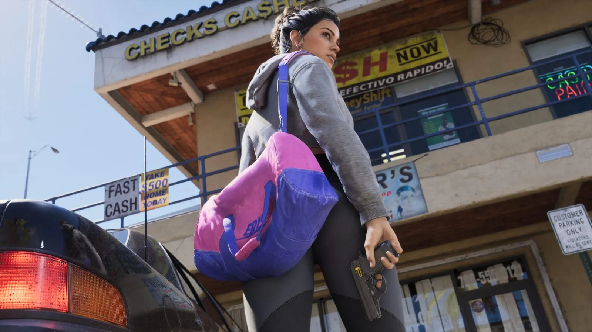
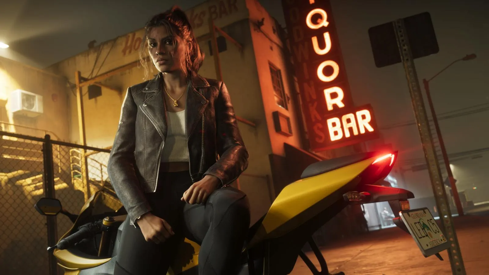

Как купить GTA 6 в России: аккаунт другого региона, пополнение, цены и подводные камни
Опубликовано:

- С марта 2022 года Sony и Microsoft не продают игры в России, российские карты в их магазинах не работают.
- Основной способ — аккаунт другого региона и пополнение кошелька картами того же региона.
- Чаще всего выбирают Турцию: GTA 6 там стоит 3999 TL, запуск — в 00:00 по Москве.
- Регион аккаунта PSN сменить нельзя — выбирайте сразу.
- Покупка через чужой регион нарушает правила магазинов — риск блокировки остаётся на покупателе.
Важно. Мы не магазин и не посредник и ничего не продаём. Это обзор того, как устроен рынок, — решения о покупке принимаете вы сами. Правила Sony и Microsoft меняются, поэтому перед оплатой всегда проверяйте актуальную информацию.
Почему нельзя купить напрямую
В начале марта 2022 года Sony приостановила работу PlayStation Store в России, а Microsoft — продажи своих товаров и услуг. С тех пор в российском регионе PS Store купить новые игры нельзя, а российские банковские карты в этих магазинах не принимаются. GTA 6 официально в России не продаётся, у неё нет и российской возрастной маркировки.
При этом сама игра работает в России: русский язык в ней есть (субтитры и интерфейс, Русский язык в GTA 6: субтитры есть, озвучки нет — и как в игре звучат другие языки), а консоли PS5 и Xbox Series продаются через параллельный импорт. Проблема только в том, как заплатить.
Какие есть способы
| Способ | Как работает | На что смотреть |
|---|---|---|
| Аккаунт другого региона + карты пополнения | Заводите отдельный аккаунт PSN/Microsoft, например турецкий, и пополняете кошелёк подарочными картами того же региона | Регион карты = регион аккаунта; продавец карт с отзывами |
| Посредник | Сервис сам покупает игру или пополняет баланс на ваш аккаунт | Нужно передавать данные аккаунта — это риск |
| Коробочное издание | В коробке код для загрузки, без диска | Код привязан к региону издания; для PS5 он должен совпадать с регионом аккаунта |
| Ключ Xbox | Цифровой код для Microsoft Store | Регион ключа и аккаунта; проверяйте условия продавца |

Какой регион выбрать
Российские игроки чаще всего заводят аккаунты Турции, Польши, Индии, Украины, Великобритании и США. От региона зависят три вещи: цена игры, где брать карты пополнения и во сколько игра откроется 19 ноября.
| Регион | Цена Standard | Запуск 19 ноября по Москве |
|---|---|---|
| Турция | 3999 TL | 00:00 |
| Польша | 349 zł | 02:00 |
| Украина | см. в магазине | 01:00 |
| Индия | см. в магазине | 21:30 (18 ноября) |
| Великобритания | £69,99 | 03:00 |
| США | $79,99 | 08:00 |
Почему Турция так популярна: подарочные карты турецкого PSN легко найти, цены в лирах, а время запуска совпадает с московским. Полная таблица времени запуска — в статье Дата выхода GTA 6: 19 ноября 2026 — во сколько, на чём и что было до этого.
Турецкий аккаунт: как это устроено
- Аккаунт PlayStation создаётся на сайте Sony с указанием страны — Турции. Регион потом изменить нельзя.
- На PS5 добавляется второй пользователь с этим аккаунтом. Игра, купленная на нём, будет доступна и основному пользователю, если турецкий аккаунт назначен основным для этой консоли.
- Кошелёк пополняется подарочными картами PSN Турции (номиналы в лирах). Их продают цифровые магазины и маркетплейсы.
- Игра покупается в PlayStation Store Турции — Standard за 3999 TL или Ultimate за 4999 TL.
- Предзагрузка доступна с 10 ноября (Предзагрузка GTA 6: с 10 ноября, до 212 ГБ — как скачать заранее и сколько места нужно).
Сохранения и трофеи привязаны к аккаунту, на котором вы играете. Если планируете играть с основного профиля — заранее разберитесь с настройкой «основной консоли».
Если у вас Xbox
На Xbox схема похожая: аккаунт Microsoft другого региона и подарочные карты или цифровой ключ. Xbox Series X|S работает с играми из разных регионов, но покупка и пополнение всё равно привязаны к региону учётной записи Microsoft. Предзагрузка на Xbox открылась 10 ноября в 03:00 по Москве, а запуск, по словам Rockstar, — в полночь по местному времени.
Риски и подводные камни
- Правила магазинов. Пользовательские соглашения Sony и Microsoft требуют, чтобы данные аккаунта были достоверными. Аккаунт с неверной страной формально нарушает правила, и магазин вправе его ограничить. На практике массовых блокировок за это не было, но гарантий нет.
- Мошенники. Перед большими релизами появляются продавцы «дешёвых ключей» и «аккаунтов с игрой». Покупка общего аккаунта — частая ловушка: доступ могут отобрать.
- Регион карты. Карта Польши не пополнит турецкий кошелёк — это самая частая ошибка.
- Цены могут меняться. Магазины пересматривают региональные цены, особенно при скачках курса.
- Онлайн и подписки. Для GTA 6 на старте онлайн не нужен, но месяц GTA+ за предзаказ продлевается автоматически — отключите автопродление, если не планируете платить.
Чек-лист перед покупкой
- Выбрать регион один раз и навсегда.
- Сравнить цену игры в выбранном регионе.
- Купить карты пополнения именно этого региона у продавца с отзывами.
- Освободить до 212 ГБ на консоли.
- Проверить время запуска для своего региона.
- Не передавать пароль от аккаунта посторонним.
Частые вопросы
Можно ли купить GTA 6 в России?
Напрямую — нет: российские PS Store и Microsoft Store не продают игры с 2022 года. Покупают через аккаунты других регионов.
Какой регион выбрать для GTA 6?
Чаще всего — Турцию: 3999 TL, запуск в 00:00 по Москве.
Можно ли сменить регион аккаунта PSN?
Нет, регион выбирается при создании.
Есть ли в GTA 6 русский язык?
Да, субтитры и интерфейс; озвучка английская.
Источники: Sony Interactive Entertainment и Microsoft — заявления о приостановке продаж в России (март 2022); Rockstar Support — время предзагрузки и запуска (03.11.2026); PlayStation Store и Microsoft Store Турции — цены (по сводкам Haberci TV, Endgame Tools, 10.2026); пользовательские соглашения PlayStation Network и Microsoft Services Agreement.
Каждый день — одно сравнение: кадр игры рядом с реальным фото. Подписывайтесь:
YouTubeInstagramTikTok